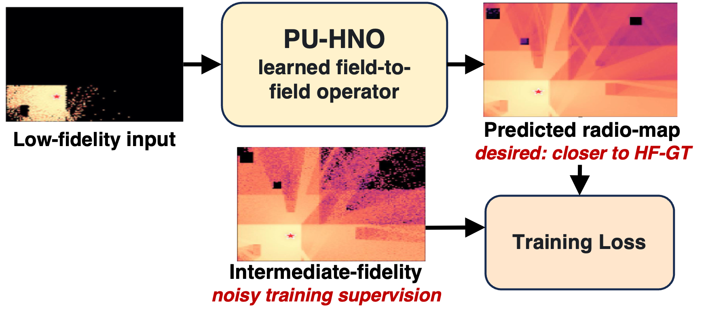
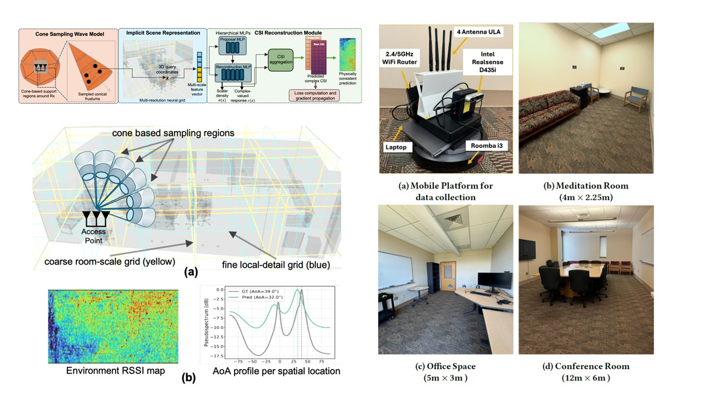
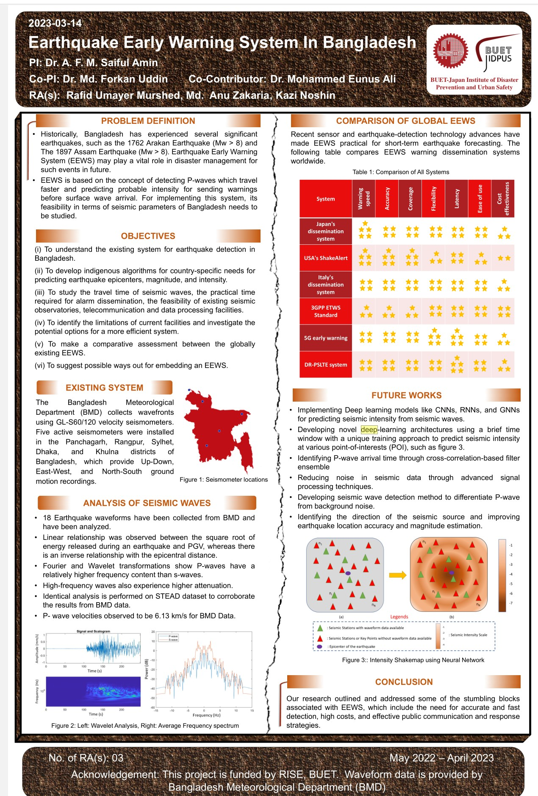
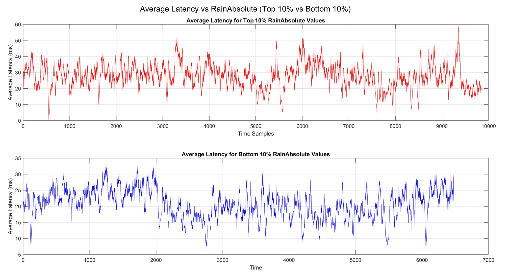
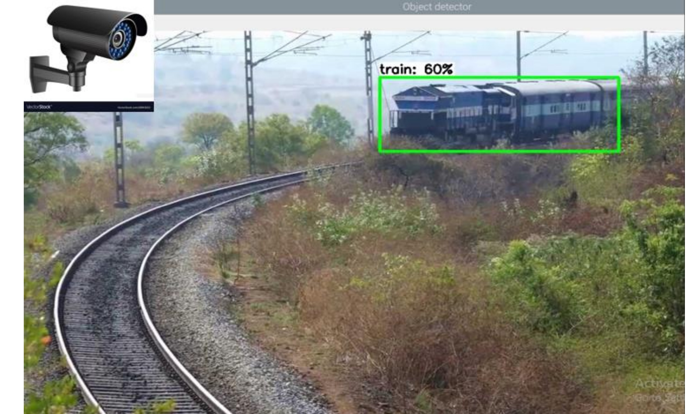

Projects
My research portfolio extends across physics-informed AI, wireless communications, computational electromagnetics, sensing, geolocation, and embedded systems. These selected projects reflect work from BUET, UT Dallas, UIUC, and my industry research internship.
RayNO / PU-HNO — high-fidelity radio maps from inexpensive ray tracing
A physics-unrolled neural operator that reconstructs accurate wireless propagation fields from lower-cost simulations. The architecture progressively refines specular reflection, diffraction, and scattering and examines generalization to different indoor environments and noise conditions. NeurIPS 2026, accepted.

GCNO — physics-based wireless channel compression
A variable-rate neural operator developed during my InterDigital AI Lab internship. Rather than learning an opaque fixed-size code, it identifies dominant propagation paths and uses an analytic reconstruction rule; it generalizes to array sizes not used for training. In the submitted AAAI 2027 paper, it uses approximately one-third as many feedback bits as a strong baseline at comparable reconstruction quality.
WiNeRF — measurement-constrained wireless neural fields
WiNeRF learns a spatially continuous wireless channel representation from commodity Wi-Fi CSI without requiring complete environmental scans. It incorporates hardware measurement properties such as phase ambiguity and antenna sampling, and supports beamforming, AoA profiling, and RSSI mapping. EWSN 2026, published.

FoliaRT — neural electromagnetic canopy scattering
A physics-informed neural surrogate that models transmission, absorption, and directional scattering for vegetation in wireless ray tracing. The model is reusable across canopy geometries, supports fast electromagnetic inference, and is evaluated against full-wave simulations and real-world wireless measurements. SenSys 2027, under review.
Earthquake early warning and seismic data analysis
At BUET–JIDPUS, I analyzed earthquake waveforms from a national seismic network, examining frequency content, attenuation, and statistical properties. My work on self-supervised contrastive graph learning predicts shaking intensity using short, early seismic recordings across a network of sensors.

Contactless heart-rate sensing with millimeter-wave radar
A CNN-based signal processing framework for estimating heart rate from radar ballistocardiography. This work combines noisy RF measurements, signal preprocessing, and neural inference, published in Elsevier's Array in 2023.
Weather-aware wireless latency prediction
Using wireless experiments and environmental observations on the NSF PAWR ARA testbed, I studied associations between latency and weather variables including rain, snow, humidity, and pressure. I presented this research in an invited MERIF 2024 show-and-tell session entitled Uncovering the Latency–Weather Relationship: Insights from ARA.

Deep learning and optimization for MIMO beamforming
My earlier wireless research includes a CNN–LSTM hybrid beamforming architecture, low-complexity greedy MU-MIMO beam selection, singular-vector-projection beam selection, and self-supervised contrastive learning for robustness under imperfect CSI. These projects address interference mitigation, computational complexity and latency in mmWave/THz systems.
Deep learning for metasurface characterization
MetaFAP studies meta-learning for frequency-agnostic prediction of metasurface properties, while IR-DNN predicts impedance-regulated electromagnetic responses for RIS-assisted interference suppression. Both aim to reduce simulation or optimization costs associated with smart electromagnetic surfaces.
WiViz and wireless literacy
Collaborative research on making wireless propagation mechanisms understandable to non-specialists. The project investigates whether seeing intermediate RF phenomena can improve people's reasoning about everyday connectivity. A manuscript is under review at HotMobile 2027.
Automated railroad level-crossing system
As an undergraduate researcher, I helped develop a Raspberry Pi-based embedded computer-vision system to detect approaching trains, provide warning signals, and operate crossing barriers at unmanned crossings. A related patent application was filed in 2022.

Other engineering prototypes
My earlier hands-on engineering experience includes radio encryption hardware, FPGA-based cooling control, and STM32-based voltage protection systems, complementing my later focus on wireless communication and machine learning.